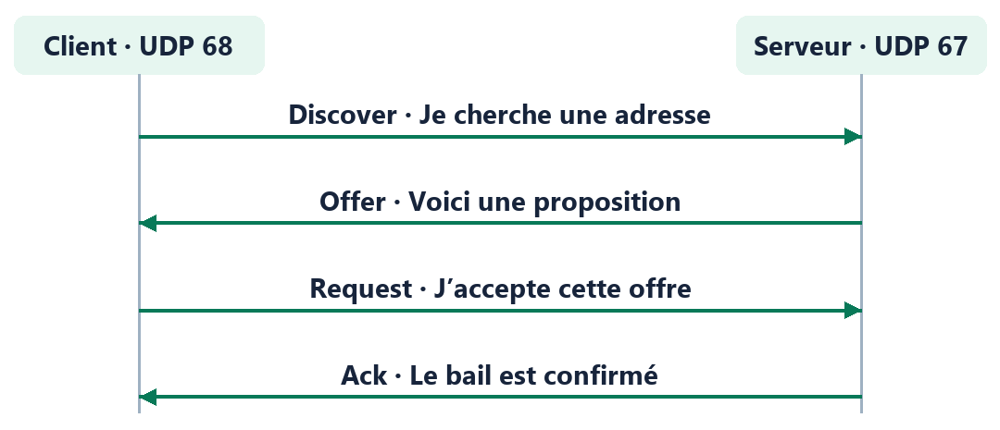

Comprendre le cours
1. Suivre un message avec les couches du réseau
Quand un ordinateur parle à un autre, il doit savoir quelle application écoute, quelle machine joindre et à quel voisin remettre le message sur la liaison. Chaque couche répond à l’une de ces questions en ajoutant ses propres informations. C’est l’encapsulation.
| Ce que tu inspectes | Ce que ça t’apprend | Exemple |
|---|---|---|
| Service et transport | Quel échange et quel programme attendent les données ? | DHCP utilise UDP, notamment les ports 67 et 68. |
| Paquet IPv4 | Quelles sont les adresses source et destination du paquet ? | Client vers serveur ou ping entre deux réseaux. |
| Trame Ethernet | À qui remet-on le paquet sur cette liaison ? | Adresse MAC du poste voisin ou du routeur. |
| Signal physique | Comment les bits circulent-ils sur le support ? | Signaux sur le câble Ethernet. |
Le modèle OSI nomme sept couches. Les couches physique, liaison et réseau correspondent directement aux trois questions sur les bits, les trames et les paquets. Le transport se trouve au-dessus. Les couches session, présentation et application décrivent l’organisation des échanges, le format des données et le service utilisé.
Dans le modèle TCP/IP, FTP et DHCP sont deux protocoles d’application. TCP fournit un flux d’octets ordonné et ouvre une connexion avec SYN → SYN, ACK → ACK. UDP fournit des datagrammes indépendants. Une application utilisant UDP peut organiser ses propres échanges. ICMP sert notamment au diagnostic IP. Le ping utilise les messages Echo Request et Echo Reply, sans port TCP ou UDP.
2. Comprendre ce que fait Ethernet
Une adresse MAC Ethernet compte 48 bits, souvent affichés sous forme de six octets en hexadécimal. La trame indique en particulier la MAC de destination, la MAC de source, le type de contenu et les données. L’EtherType vaut 0x0800 pour IPv4 et 0x0806 pour ARP. Le FCS sert à détecter une corruption. Selon l’interface et le pilote, l’outil de capture peut recevoir la trame sans ce champ.
Un hub répète le signal depuis le port d’entrée vers les autres ports. Un commutateur lit la MAC source pour apprendre derrière quel port se trouve un poste. Si la destination est connue, il envoie la trame vers ce port. Une diffusion ou une destination inconnue est propagée sur les autres ports du même réseau local. La diffusion Ethernet utilise ff:ff:ff:ff:ff:ff.
Dans le TD, l’onglet de simulation permet de séparer la demande ARP du ping. La demande ARP part en diffusion. La réponse ARP est normalement envoyée directement au demandeur. La requête ICMP qui suit utilise déjà la MAC trouvée. Si tu recommences rapidement, les postes et le commutateur peuvent réutiliser les informations apprises.
3. Décider si la destination est locale
Une adresse IPv4 compte 32 bits. Le préfixe indique combien de bits de gauche désignent le réseau. Avec /24, le masque correspond à 255.255.255.0. Pour 192.168.10.11/24, le réseau est 192.168.10.0 et l’adresse de diffusion est 192.168.10.255.
Dans une maquette simple, une destination de ce même réseau peut être jointe directement. Pour une destination extérieure, le poste consulte sa table de routage et remet la trame au prochain saut, souvent la passerelle par défaut. ARP associe l’IPv4 du voisin local à sa MAC. Si la destination est distante, la demande ARP vise la passerelle. Le paquet IPv4 garde la destination finale et le routeur le remet dans une nouvelle trame sur la liaison suivante.
| Depuis 192.168.10.11/24 vers… | IP de destination | MAC à trouver avec ARP |
|---|---|---|
| 192.168.10.15 | 192.168.10.15 | Celle de 192.168.10.15 |
| 192.168.20.15 | 192.168.20.15 | Celle de la passerelle locale, par exemple 192.168.10.1 |
Quand le ping échoue, vérifie d’abord l’adresse et le masque, puis le prochain saut, l’état des interfaces et le chemin de retour. Une route aller établie ne garantit pas que la réponse trouve le client.
4. Obtenir une configuration IPv4 automatiquement
Le serveur DHCP loue une adresse à un client et lui communique des réglages, comme le masque, la passerelle et le DNS. Le pool désigne les adresses distribuables. Réserve l’IP du serveur et celle du routeur hors du pool.

Le client sans adresse diffuse un Discover. Le serveur propose une adresse par Offer. Le client sélectionne l’offre dans Request, et Ack confirme le bail et les paramètres. Dans la capture, vérifie les adresses de chaque réponse. Leur mode d’envoi peut dépendre du bit de diffusion et du contexte. Un renouvellement de bail peut aussi montrer un échange plus court.
Sigles et acronymes
- ACK · Acknowledgment
- Accusé de réception.
Exemple. Après un SYN-ACK, le client envoie un ACK pour confirmer l’établissement TCP. - ARP · Address Resolution Protocol
- Recherche de l’adresse MAC correspondant à une IPv4 locale.
Exemple. Pour joindre sa passerelle IPv4, le PC demande quelle adresse MAC lui correspond. - DHCP · Dynamic Host Configuration Protocol
- Distribution automatique de la configuration IP.
Exemple. Un PC obtient une adresse, un masque, une passerelle et souvent un serveur DNS. - DNS · Domain Name System
- Système qui associe des noms à des informations comme une adresse IP.
Exemple. Un poste demande quelle adresse utiliser pour atteindre www.exemple.test. - FCS · Frame Check Sequence
- Champ de vérification d’une trame.
Exemple. Un switch peut rejeter une trame Ethernet dont la vérification échoue. - FTP · File Transfer Protocol
- Protocole de transfert de fichiers.
Exemple. Un client récupère un fichier sur un serveur FTP du TP. - ICMP · Internet Control Message Protocol
- Protocole de messages de contrôle IP.
Exemple. Le ping envoie une requête Echo et attend une réponse Echo. - IP · Internet Protocol
- Protocole d’adressage et d’acheminement des paquets.
Exemple. Le routeur lit l’IP de destination pour choisir où envoyer le paquet. - IPv4 · Internet Protocol version 4
- Version d’IP à adresses de 32 bits.
Exemple. 192.168.20.1 est une adresse IPv4. - MAC · Media Access Control
- Identifiant de couche liaison d’une interface dans ce cours.
Exemple. Le switch utilise la MAC de destination pour envoyer une trame vers le bon port. - OSI · Open Systems Interconnection
- Modèle qui répartit les fonctions réseau en couches.
Exemple. Ethernet intervient en couche liaison alors qu’IP intervient en couche réseau. - SYN · Synchronize
- Drapeau TCP qui initie la synchronisation d’une connexion.
Exemple. Le client envoie SYN, puis le serveur répond SYN-ACK. - TCP · Transmission Control Protocol
- Transport des données avec suivi des échanges et retransmission.
Exemple. Les routeurs BGP établissent une session TCP avant d’échanger leurs annonces. - TTL · Time To Live
- Nombre de sauts IP restant avant abandon.
Exemple. Chaque routeur diminue le TTL du paquet avant de le transmettre. - UDP · User Datagram Protocol
- Transport par datagrammes sans établissement de connexion.
Exemple. Un client peut envoyer une requête DNS classique dans un datagramme UDP. - VM · Virtual Machine
- Ordinateur simulé par un hyperviseur.
Exemple. On peut lancer un serveur Linux en VM sur le poste de TP.
Du cours aux TD et TP
Questions TD & TP
R102 TD1 · Comparer le même échange sur un hub et un commutateur
Énoncé. Relier PC0, PC1 et PC2 à un hub. Relier PC3, PC4 et PC5 au commutateur. Proposer un plan IPv4, puis comparer un ping PC0 → PC1 et deux pings PC3 → PC5 en mode simulation.
- Exemple de plan pour la simulation. Affecte à PC0 jusqu’à PC5 les adresses
192.168.10.21à192.168.10.26avec le masque255.255.255.0. Chacune est unique et le futur pool DHCP.11à.15reste libre. Pour le premier test entre voisins, aucune passerelle n’est nécessaire. - Dans Packet Tracer, passe en Simulation, garde les événements ARP et ICMP, puis lance le ping. Sur le hub, observe la répétition du signal vers le troisième poste. Il reçoit une copie de la partie du trafic qui n’est pas pour lui et ignore les trames adressées à l’autre poste.
- Sur le commutateur, compare la demande ARP diffusée, puis l’ICMP avec une MAC de destination connue. Dans le second essai, les caches valides évitent une nouvelle recherche ARP. Avec les ports déjà appris, la trame unicast rejoint le port du destinataire.
Vérification. Distingue les appareils qui voient passer un signal de ceux qui acceptent la trame. Le hub intervient à la couche physique, le commutateur Ethernet lit les trames à la couche liaison.
R102 TD1 · Identifier les champs de la trame pendant le ping
Énoncé. Relier le hub et le commutateur, lancer un ping PC0 → PC5, décrire la trame Ethernet et indiquer le champ Type et le rôle du FCS.
- Relie les deux appareils. Les six postes de l’exemple restent dans le même sous-réseau. Dans l’onglet de détail de l’événement, ouvre d’abord une demande ARP. Sa MAC de destination est la diffusion. La MAC source correspond au poste qui recherche son voisin.
- Ouvre ensuite la requête ICMP. Une trame Ethernet II qui transporte ce paquet IPv4 annonce
0x0800. Dans le paquet qui suit, relève les deux IPv4. Dans la première trame ARP, le Type vaut0x0806. - Associe le FCS à la détection de corruption pendant la traversée Ethernet. Dans la simulation, le fait de voir un champ dans le modèle de trame et de le voir dans tous les outils de capture sont deux observations distinctes.
R102 TD1 · Distribuer les adresses .11 à .15 et lire le premier bail
Énoncé. Donner une adresse fixe au serveur, activer DHCP sur la plage .11 à .15 et analyser les messages du client et du serveur, adresses et ports compris.
- Dans Server0 → Desktop → IP Configuration, fixe par exemple
192.168.10.2/24. Dans Services → DHCP, active le service, saisis le début de plage192.168.10.11, le masque255.255.255.0et cinq utilisateurs au maximum. Renseigne la passerelle et le DNS seulement selon les services configurés dans la maquette. - En mode Simulation, garde les événements DHCP et ARP. Sur un poste sans bail, passe Desktop → IP Configuration en DHCP. Sur un client déjà configuré,
ipconfigaffiche les réglages etipconfig /renewdemande le renouvellement. - Inspecte le Discover d’une première attribution. Vérifie
0.0.0.0 → 255.255.255.255en IPv4, et68 → 67dans UDP. À la couche Ethernet, la destination est la diffusion. Ouvre ensuite l’Offer pour voir l’adresse proposée, le Request pour identifier l’offre retenue et l’Ack pour confirmer le bail.
Vérification. Sur le client, l’IP est comprise entre .11 et .15 et le masque est /24. Si aucune offre ne revient, commence par le câblage, l’activation du service, le pool et le réseau local du serveur. Si le TD ajoute un sixième client au même pool, cinq adresses permettent seulement cinq baux simultanés.
Application d’Internet 2 · Faire passer un ping à travers le routeur Linux
Cette question vient du TP1 d’Internet 2. Elle prolonge l’exercice d’adressage et de passerelle.
Énoncé. Configurer les deux interfaces du routeur Linux et la passerelle du poste client, puis comparer le ping vers 172.25.255.254 avant et après activation du transfert IPv4.
- Sur la maquette du TP, vérifie avec
ip -br addrles deux interfaces du routeur. L’une reçoit10.0.X.1/24, l’autre172.25.0.X/16. Donne au client10.0.X.2/24et une route par défaut via10.0.X.1, en reprenant le numéro de groupe du TP. - Ping d’abord l’interface locale du routeur. Puis lance le ping vers le réseau extérieur. Compare la capture côté client et côté routeur. Active le transfert avec
sudo sysctl -w net.ipv4.ip_forward=1dans la VM dédiée et rejoue le même test. - Si la requête apparaît sur les deux interfaces du routeur, le transfert aller se fait. Si aucune réponse ne revient, contrôle le chemin retour et le filtrage. Quand le paquet traverse le routeur, les MAC correspondent à la nouvelle liaison et le TTL du paquet est décrémenté.
TP Réseaux locaux · Repérer les phases TCP dans une capture FTP
Énoncé. Depuis une VM cliente, transférer un petit fichier texte vers le serveur de la maquette et identifier les ports et les phases de l’échange TCP dans une capture.
- Dans le réseau isolé du TP, vérifie la connectivité entre tes deux VM. Sur la VM serveur, démarre le service FTP configuré pour le TP. Lance une capture sur l’interface utilisée par la VM cliente avant de te connecter. Utilise un fichier de test et un compte de la maquette.
- Applique
tcp.port == 21dans le cas où le serveur utilise le port de contrôle FTP standard. Au début du flux de contrôle, lis le port éphémère du client et le port 21 du serveur dans les lignesSYN,SYN, ACKetACK. - Repère la commande de transfert et relève aussi le flux de données, qui utilise une connexion TCP distincte. Après déconnexion, observe la fermeture via les segments
FINet les acquittements. Relève le comportement visible dans ta maquette si la fermeture est abrupte.
Vérification. Le filtre du port 21 suffit à lire les commandes. Pour retrouver le contenu du transfert, suis le flux de données avec ses propres ports dans Wireshark.